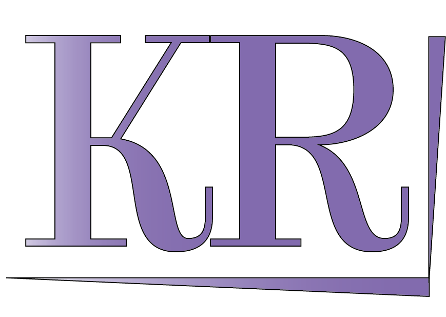

LOGO KR
LOGO KR
Contexte
J'ai réalisé cette animation afin d'embellir mon portfolio et d'élargir mes compétences en vidéo. Comme le "logo" de mon portfolio est KR j'ai décidé de choisir ses lettres.
Logiciels utilisés
- Illustrator
- After Effect
- Media Encoder
Compétences utilisées
- Montage vidéo
Experience acquises
Amélioration en animation d'image et apprentissage de nouveaux effets tel que : détection des contours, dilaté-érodé simple, luminosité et contraste, flou gaussien (hérité),vegas, remplir, CC radial fast blur, CC glass et CC blobbylize.
Quelques images :